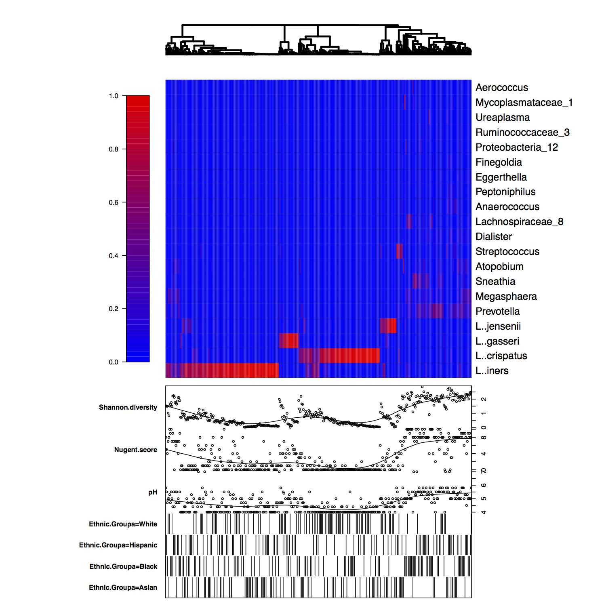

Heatmaps show an overview of taxa abundance across samples. Each column in the heatmap is a single sample. Taxa are represented in rows. Each cell is colored to reflect the abundance of the taxon in the sample. The heatmap is paired with plots of the metadata, making it possible to visually associate sample abundance information with sample characteristics. The heatmap and associated sample clustering are based on the taxonomic data. Only a subset of taxa are used to generate the heatmap. The taxa are ranked by the sum of their abundance across all samples. The highest ranked microbes are used in the heatmap.
Heatmaps can include huge amounts of information, making them ideal for visually summarizing datasets. For example, the heatmap below was generated using the Ravel et al. dataset. Sample clustering, dominant taxa identification, and metadata associations are all apparent.
Heatplus::annHeatmap2 - generates annotated heatmap
Alexander Ploner (2012). Heatplus: Heatmaps with row and/or column covariates and colored clusters. R package version 2.8.0.